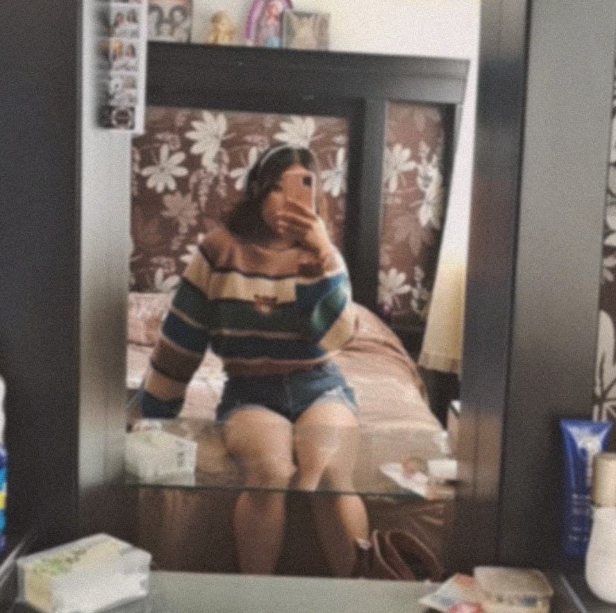

Hola soy Estefani Crystal
Mi vida cómo vegetariana

Yo
Mi nombre es Estefani Crystal Martínez Gómez y vengo a adentrarte a un mundo nuevo.
Tengo 19 años y llevo 4 años siendo vegetariana.
¿Por qué decidí serlo?
Todos los casos son distintos, el mío fue por convicción, decidí hacerlo porque mi sensibilidad hacia la naturaleza es demasiada.
¿Cómo ha sido ésta experiencia?
Buena, propiamente una experiencia divertida, con sus dificultades cuando se trata de conocer o salir con nuevas personas, e inclusive cn la familia. Pero nada como el sentimiento de saber que quitaste un peso de encima con otros seres vivos.

Ser vegetariano no solo es un tipo de alimentación. Se trata de un estilo de vida que requiere de motivación. Piensa si estás en el momento adecuado y si es así seguro que estás listo para dar el paso.
Para quién desee iniciar esta nueva etapa.
Alumna (UPO)

Cuéntaselo a tu familia y amigos. A veces puede parecer un dolor de cabeza, bien porque puede que se preocupen (muchas personas tienen la férrea creencia de que no es una dieta adecuada por desinformación) o porque no estén de acuerdo con tu decisión. Lo cierto es que vas a tener comidas familiares, salidas a restaurantes y si lo saben siempre buscaréis las opciones más adecuadas para ti.
Para quién desee iniciar esta nueva etapa.
Alumna (UPO)

Haz la transición como prefieras. Una dieta vegetariana es un estilo de vida y el cambio puede que no se produzca de la noche a la mañana, tómate el tiempo que necesites, infórmate correctamente y goza de una vida saludable y respetuosa con el medio ambiente.
Para quién desee iniciar esta nueva etapa.
Alumna (UPO)